adhere to: All the employees must adhere to the company's rules.
(tuân thủ, tôn trọng) v

agenda: Everyone paid full attention to the director when he was presenting topics in the agenda.
(chương trình nghị sự) n

bring up: Jimmy brought up a thorny issue at the meeting.
(nêu lên) v

conclude: The director concluded by thanking everyone for participating in the meeting.
(kết thúc, kết luận) v
go ahead: Though tired, David decided to go ahead with his essay.
(tiếp tục) v

goal: His short-term career goal is to find a high-paid job.
(mục tiêu) n

lengthy: Everybody was so tired of his lengthy speech that some of them fell asleep.
(dài dòng) a

matter: The board of directors are discussing controversial matters at the meeting.
(vấn đề) n

periodically: Employees are very happy to find that their salary will be increased periodically.
(định kỳ) adv
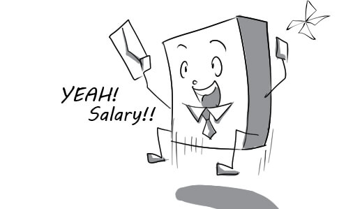
priority: Our top priority is to improve cooperation with partners.
(ưu tiên) n
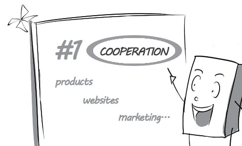
progress: The young chess player made huge progress in his training. He can beat his coach in just 30 minutes now.
(sự tiến triển) n

waste: The millionaire's son always wastes a lot of money on shopping.
(lãng phí) v

brand: Johnny just buys highly advertised brands of video games.
(nhãn hiệu) n

conform: We need to ensure that every product conforms to the company's standards.
(tuân theo) v

defect: Because of a minor defect, I had to throw the product away.
(sai sót) n
enhance: The government decided to enhance police force for better security.
(tăng cường) v
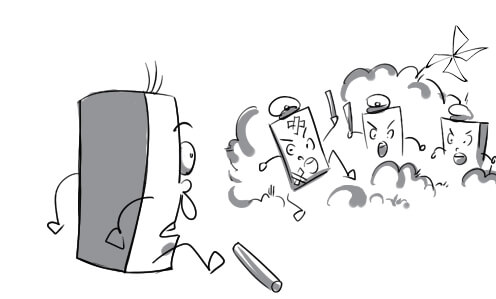
garment: Tom is trying some garments on to see whether they fit.
(hàng may mặc) n

inspect: Tom inspects every garment very carefully before buying them.
(kiểm tra) v
perceptive: Peter is a perceptive person. He is the only one who understands Mary's problem.
(mẫn cảm, sâu sắc) a

repel: The diver has an amazing camera that repels water.
(chống) v
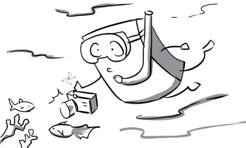
take back: If you're not delighted with your purchase, you can take them back and we will refund your money.
(trả lại) v

throw out: Peter inspects and throws out defective products.
(loại bỏ) v

uniformly: The twins were surprised to find that their hairstyles were uniformly made.
(giống nhau) adv

wrinkle: There are so many wrinkles on your shirt. You need to iron it.
(nếp nhăn) n

anxious: At first, we were anxious that flashcard blueup would not be well received.
(lo lắng) a
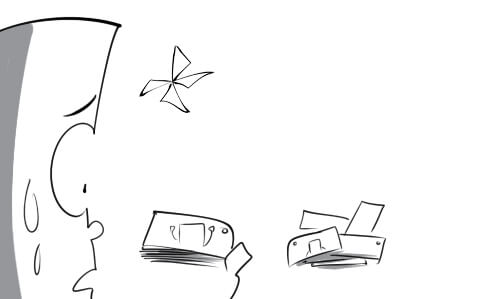
ascertain: We surveyed 500 customers to ascertain what they want from out products.
(tìm hiểu chắc chắn) v

assume: David is ready to assume the responsibilities of a product developer.
(đảm đương) v

decade: I haven't seen Jimmy for decades. He must be a grown man now.
(thập kỷ) n

examine: Mrs Green examines every garment very carefully.
(xem xét) v
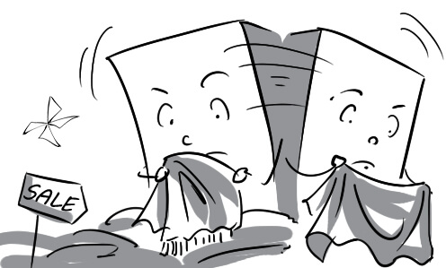
experiment: This company always experiments on animals to develop their products.
(thử nghiệm) n

logical: We have to use logical formulas to solve this thorny problem.
(hợp lý) a

research: The insectologist is doing some research on grasshopper.
(sự nghiên cứu) n
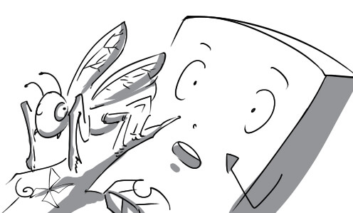
responsibility: Their responsibility is to guard the prison all the time.
(trách nhiệm) n
solve: Jimmy's colleague always has to solve all the problems that he causes.
(giải quyết) v
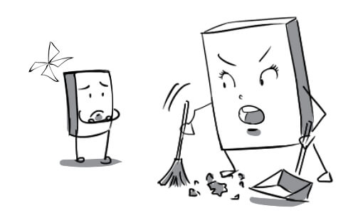
supervisor: The supervisor always forces John to do all the hard work without helping him.
(người giám sát) n
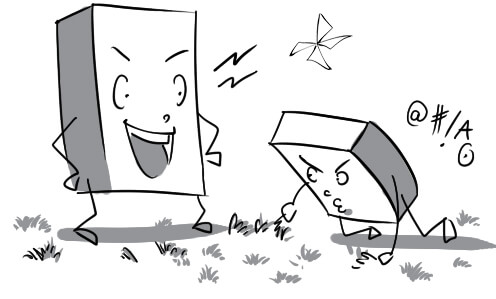
systematically: In this factory, workers are encouraged to work systematically to enhance their productivity.
(một cách có hệ thống) adv
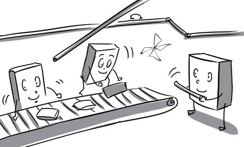
apprehensive: Everyone is apprehensive about the strength of the newly built bridge.
(lo ngại) a
circumstance: Under their current financial circumstance, they cannot send their son to college.
(hoàn cảnh) n

condition: Students are recommended to do their homework under proper lighting conditions.
(điều kiện) n
due to: Due to the car breakdown, Mr Anderson had to rent a car.
(bởi vì) prep

fluctuate: I don't want to invest in gold while its value fluctuates almost daily.
(dao động) v

get out of: The trade affair is over now. I can finally get out of preparing contracts all night long.
(thoát khỏi) v

indicator: A decrease in house prices is a indicator of the financial crisis.
(chỉ thị) n

lease: He regretted signing a 3-year lease for this luxury appartment.
(hợp đồng cho thuê) n

lock into: Peter tries to convince his clients to lock themselves into a 3-year lease.
(cam kết) v

occupy: I used to occupy this place when I was a kid.
(cư ngụ) v

option: Nowadays, there are various options open to those who want to rent a house.
(lựa chọn) n

subject to: The decision to rent this car is subject to the husband's approval.
(phụ thuộc) v

appeal: Delicious food and affordable prices give this restaurant its appeal.
(sức lôi cuốn) n

arrive: Tom disembarked the bus when they arrived at the bus stop No.9.
(đến nơi) v

compromise: Peter is making a compromise with the bouncer so that he will let him enter the nightclub.
(sự thỏa hiệp) n

daringly: Peter daringly ate the fried scorpion.
(dũng cảm) adv

familiar: I was not surprised when Julia spent a lot of time at the fashion stores. This situation was too familiar.
(quen thuộc) a

guide: The guide is talking to our tour group about the history of this mountain.
(hướng dẫn viên) n

majority: The majority of the employees prefer Indian foods.
(đa số) n
mix: The chef is mixing two ingredients very carefully.
(trộn lẫn) v

rely: I have always relied on this restaurant because of its perfect services.
(tin tưởng) v

secure: The waiter secured us a table next to the windows.
(chiếm được, đạt được) v
subjective: In my subjective opinion, the durian has a very bad smell.
(chủ quan) a
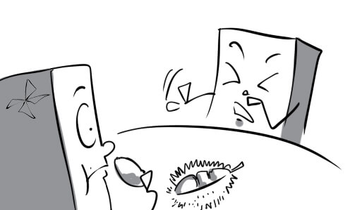
suggestion: Peter made a suggestion about where Mary and he should go this Saturday night.
(lời đề nghị) n

basic: This Vietnamese restaurant provides only basic menu.
(cơ bản) a
complete: Finally, Tom completed the restaurant customer satisfaction survey.
(hoàn thành) v
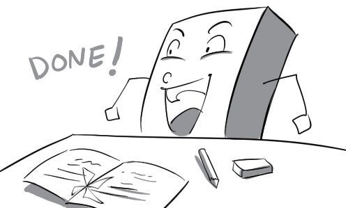
excite: I don’t know why hamburger excites them too much.
(kích thích) v
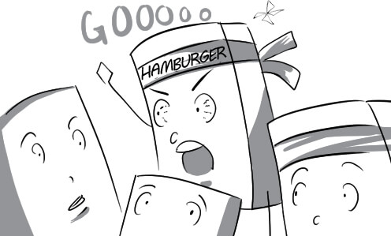
flavor: The flavor of the chicken is so great that the dog can’t resist it.
(mùi vị) n
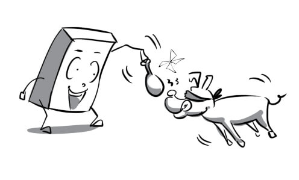
forget: In his hurry to leave, David forgot to bring his bag.
(quên) v
ingredient: Mrs Green reads the ingredients list on packaged foods very carefully.
(thành phần) n

judge: The examiner judged the dished of the two chefs and decided that Andrew was the winner.
(đánh giá) v
mix-up: The dish was ruined because of a mix-up about the ingredients.
(sự lẫn lộn) n
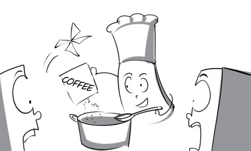
patron: This restaurant welcomes their loyal patrons very warmly.
(khách hàng thường xuyên) n
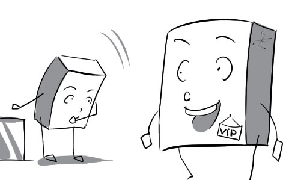
predict: The fortune-teller predicted he would become a very wealthy man.
(tiên đoán) v

randomly: Slot machine are randomly generated, so players have to depend on luck.
(ngẫu nhiên) adv

remind: The restaurant manager reminds the children to stay away from electric sockets.
(nhắc nhở) v
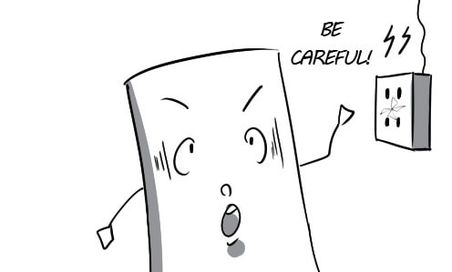
burden: John always takes on the burden of ordering lunch for everyone.
(trách nhiệm) n
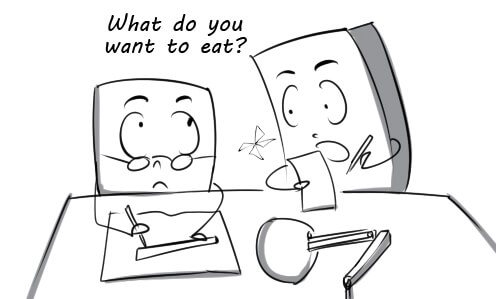
commonly: Mary commonly goes to the supermarket every sunday.
(thường) adv

delivery: This pizza restaurant hired male students to make deliveries.
(sự giao hàng) n
elegance: Lisa loves to have dinner at this restaurant because of its elegance.
(sự tinh tế) n

fall to: The task of cooking dinner fell to my wife because I usually work late hours.
(thuộc trách nhiệm) v

impress: Lisa is impressed with Marc's elegance. He always gives her a flower bouquet on their dates.
(gây ấn tượng) v
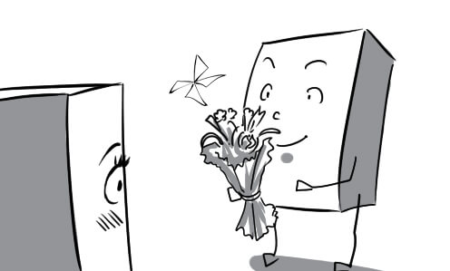
individual: Mr Anderson marks everything in this room as his individual properties.
(cá nhân) a

list: Peter was so sad because his favorite restaurant wasn't on the list of all the restaurants that deliver.
(danh sách) n
multiple: This delicious hamburger was created with multiple ingredients.
(nhiều phần) a

narrow: You should narrow the amount of food you eat daily down if you don't want to be obese.
(giới hạn) v

pick up: Peter came to the fast food stall to pick up his order.
(đi lấy) v

settle: I usually use cash to settle the bill at the restaurant.
(thanh toán) v
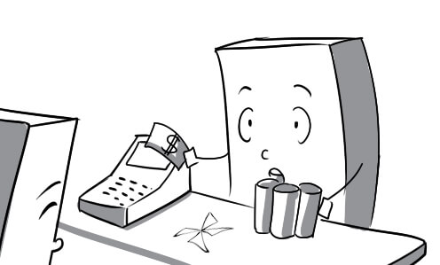
accustom to: You have to accustom yourself to cooking when you live alone.
(làm quen với) v

apprentice: The chef is discontent with his new apprentice because he's so clumsy.
(người học việc) n
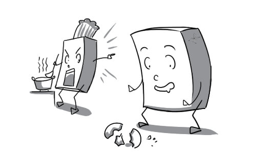
culinary: This chef is very famous for his culinary skills.
(thuộc việc nấu nướng) a

demand: The chef always demands the highest hygiene standards in his kitchen.
(yêu cầu) v

draw: The talented chef draws many patrons to his restaurant.
(thu hút) v

incorporate: The chef incorporated many uncommon ingredients into his dishes.
(kết hợp vào) v

influx: There is a influx of customers waiting to enter the restaurant.
(dòng đi vào) n

method: Mary is using her grandmother's method to make pumpkin soup.
(phương pháp) n

outlet: Joey uses cooking as an outlet for his creativity.
(phương tiện thể hiện) n
profession: The chef encourages many students to take up cooking as their profession.
(nghề nghiệp) n

relinquish: Peter decided to relinquish his cooking career to become a teacher at his father's school.
(từ bỏ) v

theme: Food and nutrition is the theme of our discussion today.
(chủ đề) n.
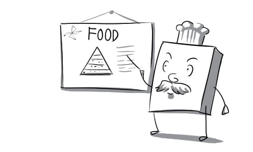